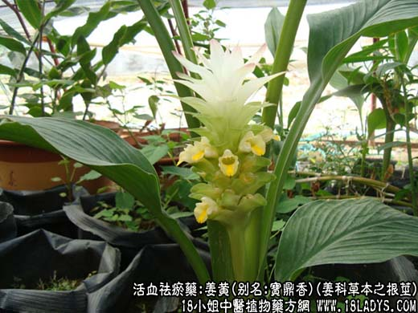
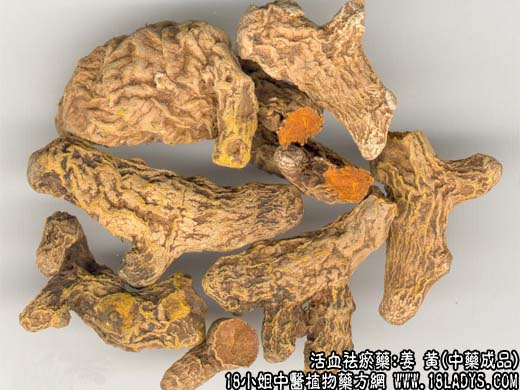

【中药概述】
姜黄，别名：宝鼎香、黄姜，为姜科草本植物姜黄的根茎。苦、辛，温。归脾、肝经。
1．活血行气止痛：用于血瘀气滞的经闭症瘕、胸胁刺痛、跌打损伤等多种证候，如（治胁痛方）（<外科正宗>如意金黄散）。
2．祛风湿利痹痛：用于风寒湿痹、气滞血瘀、经络不通的肩背疼痛，如（舒筋汤）、（<女人良方>五痹汤）。
【药物形态】
本品呈不规则卵圆形、圆柱形或纺锤形，常弯曲，有的具短叉状分枝，长2～5cm，直径1～3cm。表面深黄色，粗糙，有皱缩纹理和明显环节，并有圆形分枝痕及须根痕。质坚实，不易折断，断面棕黄色至金黄色，角质样，有蜡样光泽，内皮层环纹明显，维管束呈点状散在。气香特异，味苦、辛。
【药效鉴别】本品破血逐瘀兼能行气止痛，故能通经、消症瘕、除胸胁脘腹血瘀气滞诸痛；又能散痈肿、消朴损瘀血；还长于行肩臂，能经络以除痹痛。
【药理作用】1.有收缩胆囊，消除阻塞性黄疸，促进胆汁分泌和排除，有明显的利胆作用。2.有兴奋子宫，抗病毒作用。
【化学成分】含挥发油，油中成分为姜黄酮、去氢姜黄酮、姜烯、水芹烯、桉油精等。
【用量用法】6——12g，水煎服，或入剂。外用适量。
本文解释权归收纳中草药图谱的中药大全所有，本文地址：https://www.daquan.com/post/1999.html